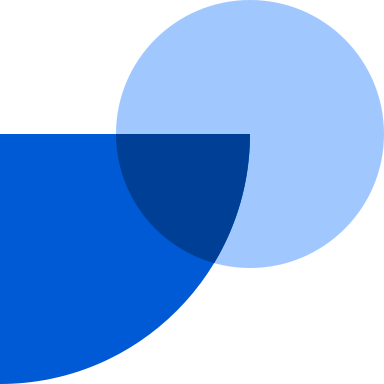

My name is Gonzalo Enei. I’m a founder and product maker.
I co-founded Faces, a presentations platform where every slide is a software artifact. I was the CEO for 3 years. We built several other AI-native products, including a Workspace where every tool was usable by humans and agents.
Before that, I was employee No.11 at

Fintual, which makes investing easy for people in LatAm. I was Head of Growth and later VP of Product, as we grew from $10M to $650M in assets under management in four years.I’d like to work at Beast Industries because I’m a fan of both media and product building. My first startup was a positive content company called El Vaso Medio Lleno, which got to 23M views a month. Recently, I’ve been building AI-native applications, including an agent that runs my family’s day-to-day and a version of Claude that conducts user interviews for you. Both things are really what I do for fun.
I also love fast-paced environments with no BS bureaucracy.
Gonzalo